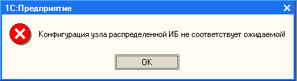

При получении ошибки при чтении сообщения:

Выгрузить конф. из сборки, получил при этом все обновления и предупредив прогр. о невозможности внесения изменений. Выгнать всех из 1С. Открыть обработку \\Servsql\1C\Обмен\РеанимацияПодчиненногоУзла_2010СборочнаяБаза.epf, отключить узел. Зайти в конф. рабочей базы и загрузить выгруженную конфу. Через обработку подключить узел. Во время выполнения даных операций никто не должен работать с базой. В плане обмена обоих баз выставить одинаковые номера сообщений. Для проверки послать и прочитать сообщение, при этом конф. рабочей базы не должен запуститься и номер полученого сообщения должен изменится сам.
Выгрузка конф. примерно 15 минут, загрузка примерно 45 минут.